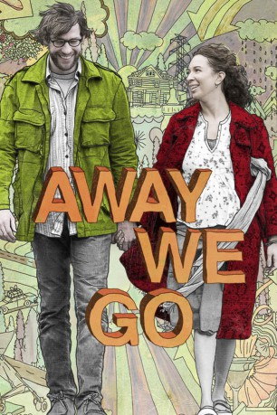
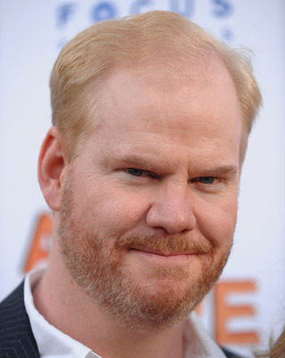
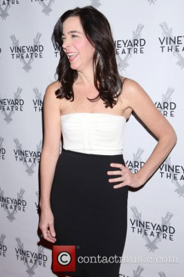
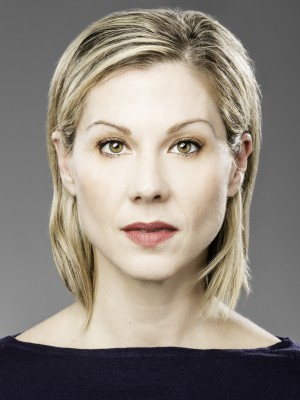
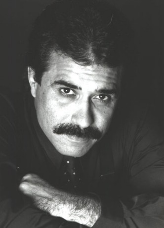
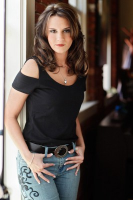

#2204 Away We Go - Auf nach Irgendwo
Alternativ: Away We Go
 
 IMDB-Wertung: 7.1 / 10
IMDB-Wertung: 7.1 / 10  Metascore: 58
Metascore: 58 
Anfang 30 stehen Burt und Verona vor einer großen Zäsur. In drei Monaten wird ihr erstes Kind geboren und damit ihr sorglos ungeplantes Leben kräftig durcheinander gebracht werden. Als Burts Eltern durch Spontanumzug nach Europa als Ratgeber ausfallen, reist das Paar durch Amerika, besucht Freunde und Verwandte, um einen neuen Lebensraum für ihre Kleinfamilie und mögliche Erziehungshilfen zu finden. Die perfekte Familie aber begegnet ihnen nirgendwo, aber irgendwo ist ein Ort, an dem sie diese schließlich selbst aufzubauen versuchen.
Jahr: 2009
Dauer: 98 Minuten
FSK: 12
Land: USA Studio: Focus FeaturesTonspuren: DD5.1 - ,
Untertitel:
Auflösung: 1080p (1920x816) Größe: 8448 MB
Genre: Komödie, Drama, Liebe
Regisseur:  Sam Mendes
Sam Mendes
Drehbuch: Dave Eggers, Vendela Vida
Soundtrack: Alexi Murdoch
Darsteller:
 John Krasinski als Burt
John Krasinski als Burt Maya Rudolph als Verona
Maya Rudolph als Verona Carmen Ejogo als Grace
Carmen Ejogo als Grace Catherine O'Hara als Gloria
Catherine O'Hara als Gloria Jeff Daniels als Jerry
Jeff Daniels als Jerry Allison Janney als Lily
Allison Janney als Lily-  Jim Gaffigan als Lowell
- Samantha Pryor als Ashley
- Conor Carroll als Taylor
 Maggie Gyllenhaal als LN
Maggie Gyllenhaal als LN Josh Hamilton als Roderick
Josh Hamilton als Roderick- Bailey Harkins als Wolfie
 Chris Messina als Tom
Chris Messina als Tom Melanie Lynskey als Munch
Melanie Lynskey als Munch- Colton Parsons als James
- Jerome Stephens Jr. als Ibrahim
 Paul Schneider als Courtney
Paul Schneider als Courtney- Isabelle Moon Alexander als Annabelle
-  Finnerty Steeves als Professor Ruby
-  Stephanie Kurtzuba als Performance Mom
- Shirley Roeca als Dana
- Tory Wood als Carrie
- Duane Sequira als Dancer Guy
- Leah O'Donnell als Dancer Girl
- Sam Alsadi als Army Sergeant , uncredited
 Richard Anderson als Greyhound Track Patron , uncredited
Richard Anderson als Greyhound Track Patron , uncredited- Olivia Baseman als Bartender at the Strip Club , uncredited
 David Boston als Pedestrian , uncredited
David Boston als Pedestrian , uncredited-  Anthony Correa als Tourist , uncredited
- Kimberly Dorsey als Train Passenger , uncredited
- Rob Douglas als Greyhound Track Patron , uncredited
- Rob Edwards als Resort Patron , uncredited
- JaMarlin Fowler als Greyhound Track Patron , uncredited
-  Sari Gagnon als College Student , uncredited
- Angela Golden Bryan als Airline Passenger , uncredited
- Greg Joseph als Track Owner , uncredited
- Kody Klein als Track Patron , uncredited
- Dave LaBrucherie als Bar Patron , uncredited
 Paul Jude Letersky als Neighbor , uncredited
Paul Jude Letersky als Neighbor , uncredited- J. Lyle als Greyhound Track Patron , uncredited
- Dave McIlreath als Resort Patron , uncredited
- Michael Ortiz als Resort Patron , uncredited
- Brandon Shepard als Cowboy in Black Truck , uncredited
- Brendan Spitz als Baby Neptune
- Jaden Spitz als Baby Neptune
- Katherine Vaskevich als Katya
- Brianna Eunmi Kim als Cammie
- Pete Wiggins als Beckett
- Audrey Amey als Gwen
- Michael Breckley als Dancer Guy
Datei: X:\2009(A-F)\Away We Go - Auf nach Irgendwo (2009, FSK12, 1920x816).mkv seit 20.10.2015
Festplatte: HD 2008(G-Z)-2009(A-F)
 Es gibt insgesamt 91 Filme in der Gruppe '2009(A-F)'
Es gibt insgesamt 91 Filme in der Gruppe '2009(A-F)'